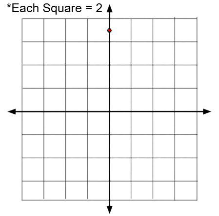
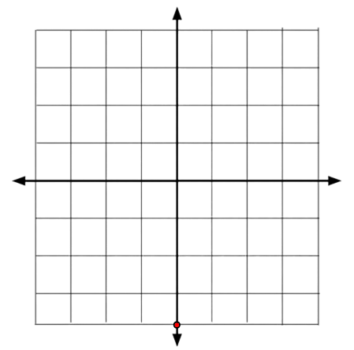
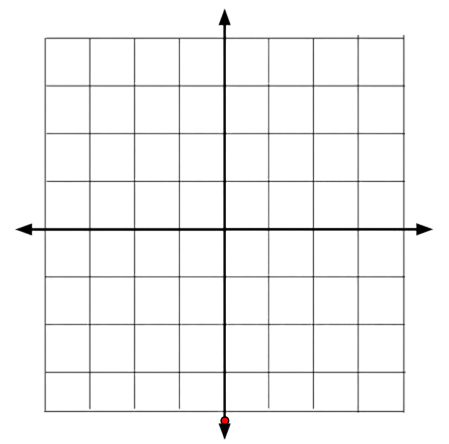
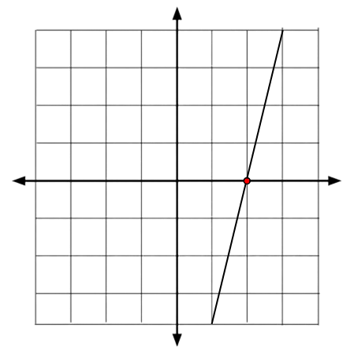
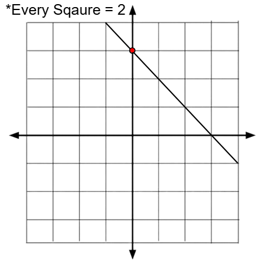

(0, 2)
(0, -3)
(0, 1)
X-intercepts are points that cross the x-axis, examples may include...(2, 0)
(-3, 0)
(6, 0)
 In slope intercept form, the y-intercept appears as, "b"...
In slope intercept form, the y-intercept appears as, "b"...
y = mx + b
To find the y-intercept in different forms of functions require different steps.5x + 3y = 21
So in this function, we substitute x as 0...When x = 0
5(0) + 3y = 21
3y = 21
Now we divide both sides by 3...y = 7
So the y-intercept of this function is (0, 7) or when the y equals 7...  This strategy can be applied to slope-intercept form when the function's formula is known...y = 2x - 4
Same thing as last time, we substitute x as 0...When x = 0
y = 2(0) - 4
Now we evaluate the function...y = 0 - 4
y = -4
So the y-intercept of this is -4 or (0, -4)...  Now to solve the y-intercept(s) of a function only knowing the slope and one given point is different.y = (2/3)x + b
One given point is (6, 13)
First we substitute x and y...13 = (2/3) * 6 + b
13 = 12/3 + b
13 = 4 + b
9 = b
So the y-intercept of this function is 9.y = mx + b
X-intercepts are found similar to y-intercepts, except you substitute x instead of y. For example in standard form...-4x + 2y = 18
So instead of substituting x as 0, we substitute y as 0...When y = 0
-4x + 2(0) = 18
-4x + 0 = 18
-4x = 18
4x = -18
x = -4.5
 So the x-intercept of this function is -4.5 or (-4.5, 0). To find an x-intercept in slope intercept form, do the same thing...y = 4x - 8
When y = 0
0 = 4x - 8
8 = 4x
2 = x
The x-intercept of this function is 2 or (2, 0).  Now to find the x-intercept of a function only knowing the slope and one point, you must calculate the y-intercept of the function, so for example...y = -x + b
A point (4, 2) is given
We substitute the values and first find the y-intercept...2 = -(4) + b
2 = -4 + b
6 = b
Now that we know the y-intercept, which is 6, we can solve for the x-intercept...Since b = 6
y = -x + 6
When y = 0
0 = -x + 6
-6 = -x
6 = x
Now we know the x-intercept, which is also 6...y = -x + 6
